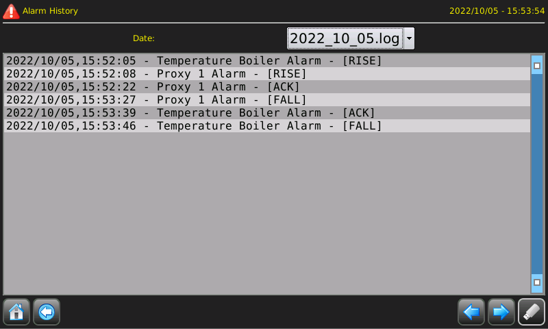

Pour afficher la page d'historique des alarmes, vous pouvez utiliser un ATCMbutton et entrer le mot “alarms_history” dans la propriété “pageName”. Voyez chapitre “Page de librairie”.
Cette page affiche toutes les alarmes qui se sont produites précédemment:

Vous pouvez les filtrer par jour en utilisant le menu déroulant. Vous pouvez également
télécharger les données sur une clé USB en appuyant sur le bouton
 qui sera activé lors de l'insertion d'une clé USB.
qui sera activé lors de l'insertion d'une clé USB.